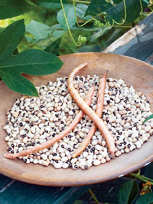
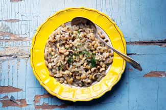
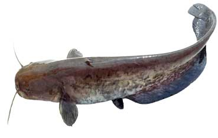

Unique Short-Season Heirloom Cowpea
Try fast-growing ‘Fagiolino Dolico Di Veneto’ cowpeas in your garden this spring.
By William Woys Weaver
February/March 2009
Delicious, easy to grow and prolific, this northern Italian heirloom brings a lot more to the table than your typical Southern black-eyed pea. The flavor is somewhat earthy like mushrooms, but with a buttery texture. In the Veneto (the region in northeastern Italy that contains Venice), it is often cooked with mushrooms, or served as a side dish with eel, a local favorite. ‘Fagiolino Dolico di Veneto’ (loosely translated as “dwarf cowpea from the Veneto”) comes to us with a rich history, though no one knows exactly how long it has been cultivated.
This dwarf cowpea came to Italy with the arborio rice that is often served with it. The rice has been grown in the Po River Valley in northern Italy since the 15th century, and evidently came from the East, most likely Cyprus, where the Venetians had a long-established trading presence. Cowpeas claim sub-Saharan Africa as their genetic origin, but they were cultivated for thousands of years by the ancient Egyptians and Greeks. These were the “beans” that the Greeks ate on New Year’s Day to invite good luck.
Rice with young spring peas was a holdover of the ceremonial porridges served at the beginning of high feasts in the Middle Ages, except that this much-imitated Venetian culinary classic (now called risi e bisi) should be made with a special baby pea from Lumignano - which is unavailable in this country. The recipe below is a version made with arborio rice and baby cowpeas, the fagiolini dolichi of the Veneto. Note that Venetians, in their own dialect of Italian, do not refer to them as fagiolini (plural) but rather fasolin’dolichi often dropping the final “i” and running the two words together. You will certainly find it written that way on country menus, and if you shop for these cowpeas in a Venetian farm market, you would need to know this.
‘Fagiolino Dolico di Veneto’ probably shares some botanical kinship to the ‘Fagiolino Dolico Nano dall’Occhio’ of Tuscany. These dwarf varieties of cowpea, with miniaturized pods and peas, were well-established by the 1600s, and were bred and re-bred for cultivation in small gardens.
In the United States, we have similar varieties called “rice” cowpeas, generally white or red in color. However, in this country Southern cowpeas are generally treated as a field crop because of their rampant vines and sprawling habits. The Venetian cowpea is different. Its neat, bushlike growth makes it an ideal small garden crop, and its production of pods is prolific, which is even better for the cook because all parts of this plant are edible: the young shoots, the green pods (which can be harvested like string beans), the young peas, and the ripe seeds (which can be cooked like any common cowpea). They also grow fast, which is a boon to northern gardeners because many types of cowpeas require a long, hot summer.
I generally have good luck with cowpeas even in Pennsylvania because I start them indoors in flats, transfer the seedlings to small 4-inch pots, and then set them out when I plant tomatoes (which for me is mid-April). By the end of June, the cowpeas are flourishing, and by the end of July, there’s already a good crop of young pods. The plants will keep producing right up until frost (for me, early to mid-November). With this time frame in mind, you can easily grow them in Zone 6 (coldest annual temperatures down to 10 below zero), and with the help of a greenhouse or some other means of starting the plants indoors, push your luck in the warmer areas of Zone 5 (down to 15 below zero). This cowpea can be grown throughout much of the Midwest.
Plant the cowpeas a foot apart in each direction; full sun is best but they even can take a little bit of shade if your garden is not in full sun all day long. Another benefit is that cowpeas are legumes, so they fix nitrogen in the soil and the plants themselves make excellent green manure. I rotate crops in my kitchen garden from year to year, and plant potatoes where I had cowpeas the year before. This has a wonderful effect on the potato crop, because they are heavy feeders. As for pests, I do not have many problems with insects, except for late-season bean beetles that move to other plants once the beans are finished. Of course, rabbits and groundhogs will relish your cowpeas as much as you do, so you will need to fence off the plot if these animals are a problem where you live. I highly recommend a product called Liquid Fence that keeps off just about everything except raccoons.
For saving seeds, just let the pods ripen on the vines. When they are dry, harvest and split them open. Let the peas dry on a tray in the house for a few days, then store and label in airtight jars out of direct sunlight as you would any other bean or pea. Germination rates remain fairly high for five to six years if your seeds are stored well.
Venetian Style Rice and Cowpeas
This dish is treated by the Venetians as a stew, so it should be soupy in texture, eaten with a spoon rather than with a fork. Its place on the Venetian menu falls under minestre and risotti, dishes served between the antipasto and main course.
2 cups cowpeas
1 cup onion, chopped
2 tbsp unsalted butter
2 tbsp olive oil
4 cups fish stock (see below for recipe)
1 cup arborio rice
2 tbsp parsley, chopped
1/2 cup parmesan cheese, grated
Salt, to taste
Cover the cowpeas with boiling water and let them stand 20 minutes until plump and somewhat tender. Drain and set aside.
Put the onion in a stockpot with the butter and olive oil and sauté over medium heat until golden. Add the soaked cowpeas and 3 cups of fish stock. Cover and cook over medium heat for 15 to 20 minutes, or until the cowpeas are fully tender. Next, add the rice, parsley (save a little for the garnish), and the rest of the broth. Cover and cook slowly for about 15 minutes or until the rice is tender but al dente (firm to the bite). Stir occasionally and season with salt. Add the grated cheese just before serving, and garnish with chopped parsley. Serves 4 to 6.
Fish Stock
The Venetians like to use eel for this recipe, and it is very good indeed. But I think catfish can be used just as well. In fact, any fish remains, such as the tails, head and bones, can be used for stock.
1 pound fish remains
1 1/2 quarts water
1/4 onion
2 to 3 fresh bay leaves
1 slice lemon
Put the fish in a deep stewing pan with the water, onion, bay leaves and lemon. Simmer for 25 minutes or until the fish is tender, then remove from heat. Discard the lemon, bay leaves and onion. Lift out the fish with a slotted spoon and set aside for serving in pasta or with a tomato sauce. Strain the stock through a fine sieve or colander and use as directed. Yields 1 quart.
Source
Underwood Gardens/Terroir Seeds, LLC
888-878-5247
HIGHLY RECOMMENDED by the Mother Earth News editors:
Heirloom Vegetable Gardening: A Master Gardener’s Guide to Planting, Seed Saving and Cultural History by William Woys Weaver, now on CD. If you want to explore the fabulous flavors, fascinating history and amazing diversity of vegetables, this is the book to start with. Food historian and Mother Earth contributing editor Will Weaver profiles 280 heirloom varieties, with authoritative growing advice and incredible recipes. First published in 1997, Heirloom Vegetable Gardening has since been out of print, with used copies selling online for as much as $300. We are proud to present the original text, with color photos, as a digital book on CD-ROM. Order now.
William Woys Weaver is a well-known food historian who began counting cowpeas while an architecture student in Italy. Now he grows more than 20 kinds.
|
 ROB CARDILLO Fast-growing ‘Fagiolino Dolico Di Veneto’ heirloom dwarf cowpeas from northern Italy, in the pod and dried |
 VAITHINATHAN MUTHURAMANN/GETTY 'Fagiolino Dolico' grows fast, making it ideal for both warm and cool climates. |
 ROB CARDILLO Venetian Style Rice and Cowpeas recipe, known as risi e bisi in the Veneto (the region of northern Italy that includes Venice) |
|
 ELENA VDOVINA/ISTOCKPHOTO You can use catfish, which is widely available, instead of the traditional eel to make Venetian fish stock. Use your fish stock in our wonderful recipe for Venetian Style Rice and Cowpeas (risi e bisi). |
|
|